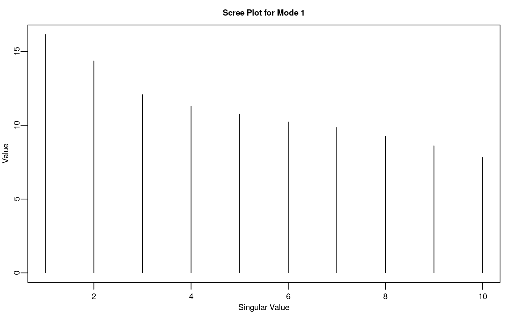
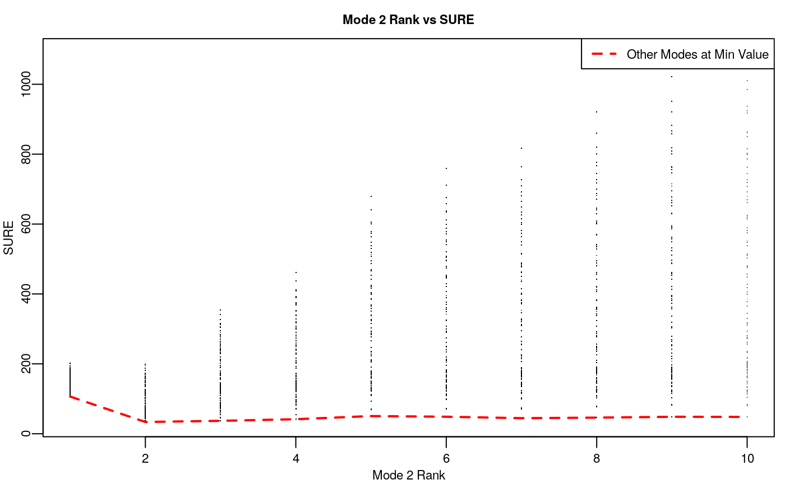

Abstract
This vignette will run through a couple examples on calculating higher-order spectral estimators (HOSE) and using SURE as an estimator selection procedure.
Generate Simulated Data.
First, we’ll load the hose package and create some simulated data whose mean is actually low multilinear rank. X is a \(10 \times 10 \times 10\) tensor that has multilinear rank \(2 \times 2 \times 2\). We use the holq function from the tensr package to simulate a tensor whose first two singular values along each mode are approximately equal.
library(tensr)
library(hose)
set.seed(328)
p <- c(10, 10, 10)
r <- c(2, 2, 2)
n <- length(p)
tau2 <- 1
fnorm_mean <- sqrt(prod(p)) * sqrt(tau2) / 2 ## so on same order as error
U_temp <- tensr::hosvd(array(stats::rnorm(prod(p)), dim = p))$U
U2_temp <- list()
S_temp <- tensr::holq(array(stats::rnorm(prod(p)), dim = r), print_diff = FALSE)$Z
for(index in 1:n) {
U2_temp[[index]] <- U_temp[[index]][ , 1:r[index]]
}
## Our mean tensor.
Theta <- tensr::atrans(S_temp, U2_temp)
Theta <- Theta / tensr::fnorm(Theta) * fnorm_mean
hosvd_Theta <- hose::hosvd_full(Theta)
## Our data tensor
X <- Theta + array(stats::rnorm(n = prod(p), sd = sqrt(tau2)), dim = p)Some scree plots of the three matricizations of the data X do not seem to suggest that the mean tensor has low multilinear rank.
## scree plots of the modes. Doesn't look low rank.
hosvd_x <- hosvd_full(X)
par(cex.lab = 0.7, cex.main = 0.7, cex.axis = 0.7, mgp = c(1.2, 0.4, 0),
mar = c(2.2, 2, 1.8, 0.5))
for(index in 1:n) {
plot(hosvd_x$D[[index]], type = "h", ylim = c(0, max(hosvd_x$D[[index]])),
xlab = "Singular Value", ylab = "Value",
main = paste0("Scree Plot for Mode ", index))
}
Estimating the Variance.
All of these SURE-based mean estimators require that the variance be known. Since in most real-world applications, the variance is not known, I’ve provided a few methods to non-parametrically estimate the variance. These methods are implemented in the function tensor_var_est. The procedures available were all designed for matrix-variate data when the mean is low rank, so tensor_var_est applies these methods to each matricization of the data tensor and averages the resulting estimators. I’ll describe two of these methods now.
The method that seems to work the best in general situations is that of Choi et al (2014). They use a degrees of freedom corrected residual mean-squared error of a soft-thresholding estimator of the mean where the tuning parameter is chosen by a procedure akin to cross-validation. Use the sig_method = "soft" option in tensor_var_est to use this method. Note that sometimes the softImpute function will not converge and return a warning. The main downside to this method is that it can be very slow.
## Mode 1 , Sigma Hat = 1.452686
## Mode 2 , Sigma Hat = 1.486471
## Mode 3 , Sigma Hat = 1.619778## [1] 1.519645A method that works very well when the multilinear rank is very small and works very poorly othwerwise is that of Gavish and Donoho (2014). Their estimator is based on an asymptotic framework where the rank of the mean and the signal to noise ratio remain constant while the size of the matrix increases. Since 2 (the rank) is much less than 10 (the dimension size), this procedure might work here. Use the option sig_method = "mp" in tensor_var_est to implement this method.
## [1] 1.088261We’ll use the estimator from sig_mp_out as our variance in what follows.
The Mode-specific Truncation Estimator.
First we’ll look at mode-specific truncation as a multilinear rank selection procedure, running through each possible multilinear rank using the function sure_rank.
sure_rank returns the multilinear rank that minimizes the SURE.
## [1] 2 2 2The profiled SURE for each mode demonstrates that \(2 \times 2 \times 2\) is indeed the value that minimizes the SURE.
par(cex.lab = 0.7, cex.main = 0.7, cex.axis = 0.7, mgp = c(1.2, 0.4, 0),
mar = c(2.2, 2, 1.8, 0.5), pch = ".")
marg_1 <- sure_rank_out$all_ranks[,2] == sure_rank_out$min_rank[2] &
sure_rank_out$all_ranks[,3] == sure_rank_out$min_rank[3]
plot(sure_rank_out$all_ranks[,1], sure_rank_out$sure,
xlab = "Mode 1 Rank", ylab = "SURE", main = "Mode 1 Rank vs SURE")
lines(sure_rank_out$all_ranks[marg_1,1], sure_rank_out$sure[marg_1],
lty = 2, col = 2, lwd = 2)
legend("topright", "Other Modes at Min Value", lty = 2, col = 2,
lwd = 2, cex = 0.7)
marg_2 <- sure_rank_out$all_ranks[,1] == sure_rank_out$min_rank[1] &
sure_rank_out$all_ranks[,3] == sure_rank_out$min_rank[3]
plot(sure_rank_out$all_ranks[,2], sure_rank_out$sure,
xlab = "Mode 2 Rank", ylab = "SURE", main = "Mode 2 Rank vs SURE")
lines(sure_rank_out$all_ranks[marg_2,2], sure_rank_out$sure[marg_2],
lty = 2, col = 2, lwd = 2)
legend("topright", "Other Modes at Min Value", lty = 2, col = 2,
lwd = 2, cex = 0.7)
marg_3 <- sure_rank_out$all_ranks[,1] == sure_rank_out$min_rank[1] &
sure_rank_out$all_ranks[,2] == sure_rank_out$min_rank[2]
plot(sure_rank_out$all_ranks[,3], sure_rank_out$sure,
xlab = "Mode 3 Rank", ylab = "SURE", main = "Mode 3 Rank vs SURE")
lines(sure_rank_out$all_ranks[marg_3,3], sure_rank_out$sure[marg_3],
lty = 2, col = 2, lwd = 2)
legend("topright", "Other Modes at Min Value", lty = 2, col = 2,
lwd = 2, cex = 0.7)
Mode-specific Soft-thresholding Estimator and Competitors.
We’ll switch gears now and fit a mode-specific soft-thresholding estimator. The optimal parameter values for the mode-specific soft-thresholding estimator can be found via soft_coord. The final mean estimate is soft_coord$est.
c_obj <- get_c(X)
lambda_init <- rep(0, n)
c_init <- 1
soft_out <- soft_coord(c_obj, lambda_init = lambda_init, c_init = c_init,
use_sure = TRUE, print_iter = FALSE, tau2 = tau2_est, itermax = 20)## SURE = 160.4
## SURE = 150.9
## SURE = 140.19
## SURE = 127.58
## SURE = 109.14
## SURE = 92.17
## SURE = 80.09
## SURE = 67.35
## SURE = 57.73
## SURE = 56.45
## SURE = 55.43
## SURE = 53.66
## SURE = 52.76
## SURE = 52.02
## SURE = 50.37
## SURE = 49.82
## SURE = 49.24
## SURE = 48.63
## SURE = 47.98We’ll compare the scree plots of the mean \(\Theta\), the data \(X\), and mode-specific soft-thresholding estimator.
## scree plots of resulting estimator, X, and Theta
hosvd_soft <- hosvd_full(soft_out$est)
par(cex.lab = 0.7, cex.main = 0.7, cex.axis = 0.7, mgp = c(1.2, 0.4, 0),
mar = c(2.2, 2, 1.8, 0.5), pch = ".")
for(mode_index in 1:n) {
plot(hosvd_soft$D[[mode_index]], type = "h", xlab = "Singular Value",
ylab = "Value", main = paste0("Mode ", mode_index, " Scree Plot"),
ylim = c(0, max(c(hosvd_soft$D[[mode_index]],
hosvd_x$D[[mode_index]],
hosvd_Theta$D[[mode_index]]))))
lines(1:p[mode_index] + 0.2, hosvd_x$D[[mode_index]], type = "h", lty = 2)
lines(1:p[mode_index] + 0.4, hosvd_Theta$D[[mode_index]], type = "h",
lty = 3)
legend("topright", c("Soft", "X", "Theta"), lty = 1:3, cex = 0.7)
}

We’ll compare our tensor estimator to a couple matrix and vector competitors. We’ll look at the soft-thresholding estimator of Candes et al (2013), Stein’s estimator (Stein, 1961), and a variant of the estimator of Efron and Morris (1972) that shrinks one mode, but chooses that mode by SURE.
svd_mode1 <- svd(tensr::mat(X, 1))
mat_optim <- optim(1, fn = sure_matrix, d = svd_mode1$d,
p_dim = c(p[1], prod(p[-1])), tau2 = tau2_est, method = "Brent",
lower = 0, upper = svd_mode1$d[1])
mat_est <- array(svd_mode1$u %*%
diag(hose:::pos_part(svd_mode1$d - mat_optim$par)) %*%
t(svd_mode1$v), dim = p)
final_stein <- stein(X, tau2_est) ## Stein's estimator.
final_em <- min_ef(X, tau2_est) ## Min Efron-Morris estimator.cat(
" Losses:", "\n",
" Truncated HOSVD:", round(tensr::fnorm(sure_rank_out$est - Theta)), "\n",
"Tensor Soft Thresholding:", round(tensr::fnorm(soft_out$est - Theta)), "\n",
"Matrix Soft Thresholding:", round(tensr::fnorm(mat_est - Theta)), "\n",
" Efron-Morris:", round(tensr::fnorm(final_em$ef_est - Theta)), "\n",
" Stein:", round(tensr::fnorm(final_stein$est - Theta)), "\n",
" X:", round(tensr::fnorm(X - Theta)), "\n\n")## Losses:
## Truncated HOSVD: 9
## Tensor Soft Thresholding: 9
## Matrix Soft Thresholding: 12
## Efron-Morris: 15
## Stein: 14
## X: 32References
Candes, E., Sing-Long, C. A., & Trzasko, J. D. (2013). Unbiased risk estimates for singular value thresholding and spectral estimators. Signal Processing, IEEE Transactions on, 61(19), 4643-4657.
Choi, Y., Taylor, J., & Tibshirani, R. (2014). Selecting the number of principal components: Estimation of the true rank of a noisy matrix. arXiv preprint arXiv:1410.8260.
Efron, B., & Morris, C. (1972). Empirical Bayes on vector observations: An extension of Stein’s method. Biometrika, 59(2), 335-347.
Gavish, M., & Donoho, D. L. (2014). The optimal hard threshold for singular values is 4/sqrt(3). Information Theory, IEEE Transactions on, 60(8), 5040-5053.
Gerard, D., & Hoff, P. (2015). Adaptive Higher-order Spectral Estimators. arXiv preprint arXiv:1505.02114.
James, W., & Stein, C. (1961, June). Estimation with quadratic loss. In Proceedings of the fourth Berkeley symposium on mathematical statistics and probability (Vol. 1, No. 1961, pp. 361-379).